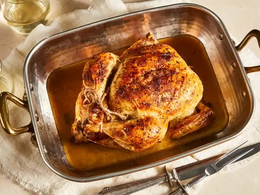

Description
The juiciest roast chicken you'll ever try!
Ingredients
- 1 (3 pound) whole chicken
- salt and black pepper to taste
- 1 tbsp onion powder
- 1/2 cup butter
- 1 stalk celery, leaves removed
Directions
- Gather all ingredients. Preheat the oven to 350 degrees F
- Place chicken in a roasting pan; season generously inside and out with onion powder, salt, and pepper. Place 3 tablespoons of butter inside the chicken cavity; arrange dollops of remaining butter on the outside of chicken
- Cut celery into 3 or 4 pieces; place in the chicken cavity
- Bake chicken uncovered in the preheated oven until no longer pink at the bone and the juices run clear, about 1 hour and 15 minutes. An instant-read thermometer inserted into the thickest part of the thigh, near the bone, should read 165 degrees F
- Remove from the oven and baste with drippings. Cover with aluminium foil and allow to rest for about 30 minutes before serving